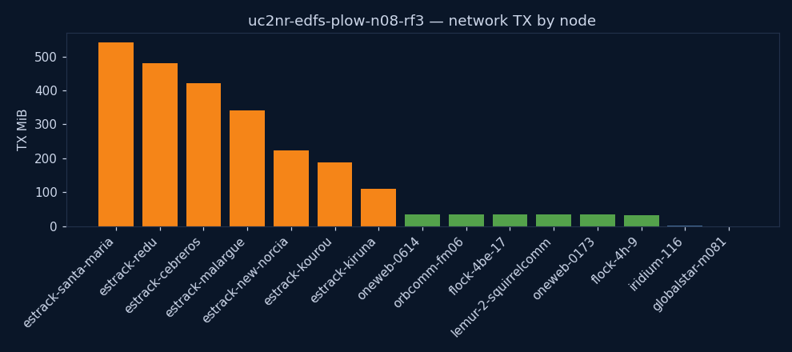
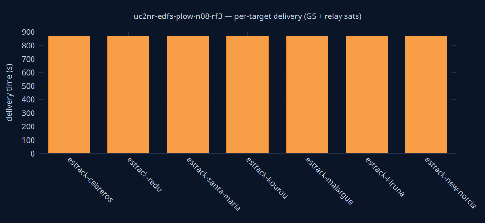

uc2nr-edfs-plow-n08-rf3
edfs
Failed
| parameter | value | unit | description |
|---|---|---|---|
| engine | edfs | — | Storage/transport engine under test (edfs or tus) |
| priority | low | — | File priority class (low/default/high; EDFS PAR) |
| sat_count | 8 | sats | Number of satellites in the constellation |
| RF | 3 | copies | EDFS replication factor (n/a for TUS) |
| KPI | value | unit | description |
|---|---|---|---|
| state | Success | — | Terminal experiment state (Success/TimedOut/Failure) |
| exec_date | 2026-06-10 19:46 UTC | UTC | Wall-clock date/time the experiment was launched (CR creationTimestamp) |
| duration | 1h 17m 46s | — | Experiment duration on the simulation clock (simulationStartTime → experimentTime) |
| sim_start | 2026-05-16 23:59 UTC | UTC | Simulation clock at experiment start (simulationStartTime) |
| sim_end | 2026-05-17 01:16 UTC | UTC | Simulation clock when the experiment finished (experimentTime) |
| produced | 8 | files | Files produced by the producer agent(s) |
| files_to_GS | 6 | count | Distinct produced files that reached at least one ground station |
| delivery_success_rate | 75 | % | Distinct files reaching ≥1 GS as a percentage of files produced (UC2/UC5 primary KPI) |
| all_delivered | no | — | Whether every produced file reached a ground station |
| first_GS_delivery_s | 868 | s | Time from sim start until the first produced file reached any ground station |
| last_GS_delivery_s | 4660 | s | Time from sim start until the last produced file reached a ground station (all-delivered time) |
| GS_reached | 7 | count | Ground stations that received the file (from received_total — independent of the delivery-time metric) |
| distinct_receivers | 7 | count | Distinct nodes that received a file (GS + relays) |
| TX_MiB | 2515 | MiB | Total network bytes transmitted, all nodes |
| peak_cpu_m | 430 | millicores | Peak CPU across all containers |
| peak_mem_MiB | 192 | MiB | Peak memory across all containers |
| notes | 2 of 8 file(s) undelivered | — | Data-quality flags for this run (missing metrics, undelivered files) |
Node colours are consistent across every chart and the graph: ■ ground station · ■ relay satellite · ■ producer.
from → to per node = where it first acquired the file by the selected time. Grouped per file; 0-byte control messages omitted; times bucketed to ~2 s for cross-node clock skew. Timeline spans the whole experiment (0 = simulation start). Delivery completeness is the File deliveries table below. from → to = bytes transferred within the trailing window ending at the selected time (instantaneous flow). Edge colour = bandwidth (bits/s, blue = low → red = high); label shows the rate. Play to watch where traffic moves moment-to-moment. Timeline is the simulation clock (0 = simulation start), shared with the charts above.| file | received by | delivery (s from creation) | time from start | #fsNodes with file |
|---|---|---|---|---|
| flock-4be-17_0 | flock-4be-17 producer | t0 | 14s from start ← t0 | 1 |
| flock-4be-17_0 | estrack-kourou GS | t0 + 2048.2s | 34m 23s from start | 2 |
| flock-4be-17_0 | estrack-malargue GS | t0 + 2048.3s | 34m 23s from start | 3 |
| flock-4be-17_0 | estrack-redu GS | t0 + 2048.3s | 34m 23s from start | 4 |
| flock-4be-17_0 | estrack-cebreros GS | t0 + 2048.3s | 34m 23s from start | 5 |
| flock-4be-17_0 | estrack-kiruna GS | t0 + 2048.4s | 34m 23s from start | 6 |
| flock-4be-17_0 | estrack-santa-maria GS | t0 + 2048.7s | 34m 23s from start | 7 |
| flock-4be-17_0 | estrack-new-norcia GS | t0 + 2048.8s | 34m 23s from start | 8 |
| flock-4h-9_0 | flock-4h-9 producer | t0 | 12s from start ← t0 | 1 |
| flock-4h-9_0 | estrack-cebreros GS | t0 + 868.2s | 14m 40s from start | 2 |
| flock-4h-9_0 | estrack-redu GS | t0 + 868.3s | 14m 40s from start | 3 |
| flock-4h-9_0 | estrack-santa-maria GS | t0 + 868.3s | 14m 40s from start | 4 |
| flock-4h-9_0 | estrack-kourou GS | t0 + 868.4s | 14m 40s from start | 5 |
| flock-4h-9_0 | estrack-malargue GS | t0 + 868.4s | 14m 40s from start | 6 |
| flock-4h-9_0 | estrack-kiruna GS | t0 + 868.7s | 14m 40s from start | 7 |
| flock-4h-9_0 | estrack-new-norcia GS | t0 + 868.7s | 14m 40s from start | 8 |
| lemur-2-squirrelcomm_0 | lemur-2-squirrelcomm producer | t0 | 11s from start ← t0 | 1 |
| lemur-2-squirrelcomm_0 | estrack-santa-maria GS | t0 + 4660.1s | 1h 17m 51s from start | 2 |
| lemur-2-squirrelcomm_0 | estrack-cebreros GS | t0 + 4660.1s | 1h 17m 52s from start | 3 |
| lemur-2-squirrelcomm_0 | estrack-redu GS | t0 + 4660.2s | 1h 17m 52s from start | 4 |
| lemur-2-squirrelcomm_0 | estrack-kiruna GS | t0 + 4660.7s | 1h 17m 52s from start | 5 |
| lemur-2-squirrelcomm_0 | estrack-malargue GS | t0 + 4660.7s | 1h 17m 52s from start | 6 |
| lemur-2-squirrelcomm_0 | estrack-kourou GS | t0 + 4670.1s | 1h 18m 0s from start | 7 |
| lemur-2-squirrelcomm_0 | estrack-new-norcia GS | t0 + 4676.8s | 1h 18m 7s from start | 8 |
| oneweb-0173_0 | oneweb-0173 producer | t0 | 14s from start ← t0 | 1 |
| oneweb-0173_0 | estrack-malargue GS | t0 + 2069.5s | 34m 44s from start | 2 |
| oneweb-0173_0 | estrack-kiruna GS | t0 + 4665.7s | 1h 17m 59s from start | 3 |
| oneweb-0173_0 | estrack-redu GS | t0 + 4665.9s | 1h 17m 59s from start | 4 |
| oneweb-0173_0 | estrack-cebreros GS | t0 + 4665.9s | 1h 17m 59s from start | 5 |
| oneweb-0173_0 | estrack-santa-maria GS | t0 + 4666.1s | 1h 17m 59s from start | 6 |
| oneweb-0173_0 | estrack-kourou GS | t0 + 4668.9s | 1h 18m 2s from start | 7 |
| oneweb-0173_0 | estrack-new-norcia GS | t0 + 4675.9s | 1h 18m 9s from start | 8 |
| oneweb-0614_0 | oneweb-0614 producer | t0 | 11s from start ← t0 | 1 |
| oneweb-0614_0 | estrack-new-norcia GS | t0 + 1614.3s | 27m 6s from start | 2 |
| oneweb-0614_0 | estrack-malargue GS | t0 + 1614.4s | 27m 6s from start | 3 |
| oneweb-0614_0 | estrack-redu GS | t0 + 1614.6s | 27m 6s from start | 4 |
| oneweb-0614_0 | estrack-kourou GS | t0 + 1614.6s | 27m 6s from start | 5 |
| oneweb-0614_0 | estrack-kiruna GS | t0 + 1614.7s | 27m 6s from start | 6 |
| oneweb-0614_0 | estrack-santa-maria GS | t0 + 1614.9s | 27m 6s from start | 7 |
| orbcomm-fm06_0 | orbcomm-fm06 producer | t0 | 14s from start ← t0 | 1 |
| orbcomm-fm06_0 | estrack-redu GS | t0 + 1624.0s | 27m 18s from start | 2 |
| orbcomm-fm06_0 | estrack-cebreros GS | t0 + 1624.2s | 27m 18s from start | 3 |
| orbcomm-fm06_0 | estrack-malargue GS | t0 + 1624.3s | 27m 18s from start | 4 |
| orbcomm-fm06_0 | estrack-kourou GS | t0 + 1624.5s | 27m 18s from start | 5 |
| orbcomm-fm06_0 | estrack-kiruna GS | t0 + 1624.6s | 27m 18s from start | 6 |
| orbcomm-fm06_0 | estrack-new-norcia GS | t0 + 1624.8s | 27m 19s from start | 7 |
| orbcomm-fm06_0 | estrack-santa-maria GS | t0 + 1630.6s | 27m 24s from start | 8 |

